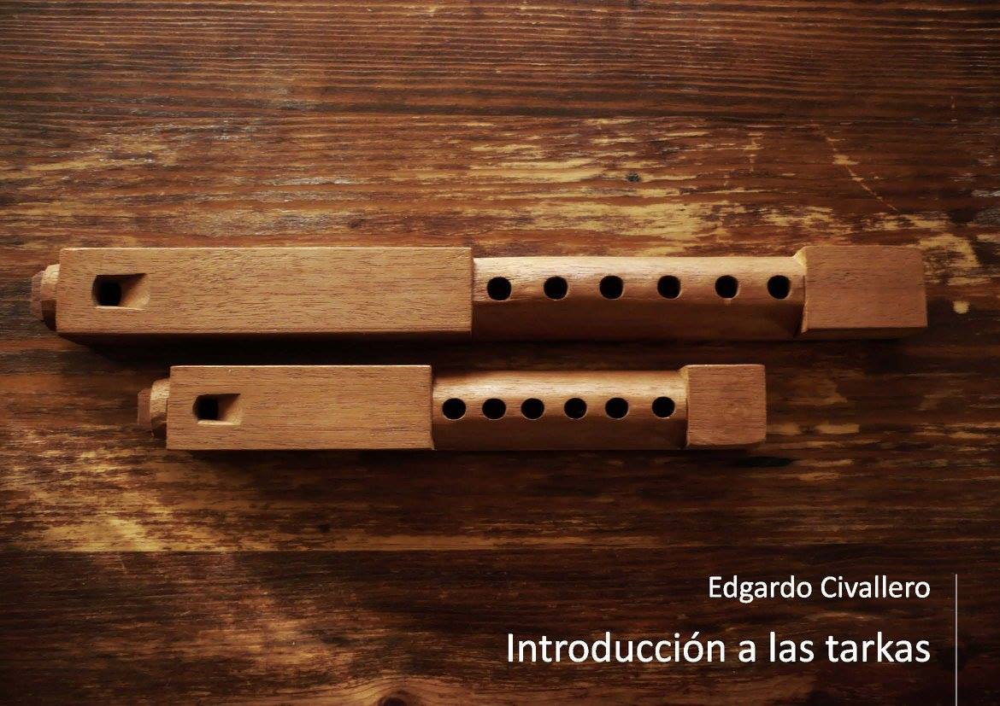

Introducción a las flautas de Pan
Inicio > Libros digitales sobre música > Introducción a las tarkas
Cómo citar este trabajo: Civallero, Edgardo (2021). Introducción a las tarkas. 2.ed.rev. Bogotá: Wayrachaki Editora.
Descargar en PDF.
Este libro constituye un estudio exhaustivo y sistemático sobre una de las flautas más emblemáticas del altiplano andino. Basado en fuentes etnográficas, organológicas e históricas, así como en observación directa y documentación de campo, el texto aborda la complejidad técnica, acústica y simbólica de la tarka —también conocida como tarqa, anata, pinkillu o pinkayllu según la región y el pueblo que la interpreta—, instrumento cuya presencia se extiende desde la meseta del Collao hasta el noroeste argentino y el norte chileno.
El trabajo describe a la tarka como una flauta vertical de pico tallada en madera maciza, clasificada bajo el código 421.221.12 del sistema Hornbostel-Sachs, es decir, un aerófono de canal interno con tubo abierto provisto de orificios. Su sección —cuadrada, octogonal o circular— y su canal interno parcialmente cerrado mediante un tapón permiten la formación de un aeroducto que conduce el aire hacia una ventana cuadrangular con bisel. A partir de ese diseño se genera un sonido ronco, áspero y vibrante, característico de la estética sonora altiplánica, que privilegia la densidad y el entrecruzamiento de armónicos por encima de la pureza tonal.
El texto analiza la estructura colectiva de interpretación: las tropas o conjuntos de tarkas organizados por tamaños —taika, malta, ch'ili, entre otros—, afinados en intervalos de quintas y octavas. Cada grupo ejecuta una misma melodía en distintas alturas, generando una textura homofónica y, en ocasiones, polifónica. Se examinan las tropas más reconocidas —potosina, salinas, kurahuara y ullara— y las proporciones entre sus longitudes, así como las transformaciones recientes derivadas de innovaciones locales y de las demandas de músicos contemporáneos. El estudio subraya que el valor del conjunto reside en la acción comunitaria, donde la participación y la igualdad prevalecen sobre el virtuosismo individual, reflejando la concepción andina del sonido como un acto social y colectivo.
El texto dedica una parte fundamental a la descripción constructiva y acústica del instrumento. Se detalla la elección de maderas, las técnicas de vaciado y tallado, y las estrategias utilizadas por los constructores para "moldear" el canal interno y producir el temblor característico llamado t'ara. Este efecto vibratorio, símbolo de la dualidad sonora, depende de la deformación intencional del tubo interior y de la precisión del soplo, y constituye el núcleo expresivo de la tarka. Cada ejemplar es único y resultado de un trabajo empírico y auditivo más que geométrico, situando su fabricación en el ámbito del arte más que en el de la artesanía funcional.
El estudio también aborda la temporalidad ritual del instrumento. Las tarkas pertenecen al jallu pacha o época de lluvias (noviembre a febrero), asociada a los ciclos agrícolas y a los rituales de fertilidad. Su sonido, considerado capaz de atraer o detener la lluvia, está cargado de fuerza simbólica y por ello se interpreta solo en momentos específicos del calendario. Tradicionalmente, son instrumentos masculinos, aunque se observa una apertura gradual hacia la participación femenina.
La investigación traza la geografía cultural del instrumento: su presencia en el Perú (Puno y Huancané), Bolivia (Oruro, Potosí, La Paz), Chile (Socoroma, Putre, valle de Azapa) y Argentina (Jujuy y Salta). En cada región adopta variaciones morfológicas, afinaciones y repertorios, manteniendo su vínculo con el ciclo agrícola y la festividad del Carnaval. El trabajo examina asimismo las transformaciones recientes que acompañan la urbanización y la profesionalización musical, señalando cómo la tarka ha pasado de ser un aerófono campesino de uso ritual a un emblema sonoro de identidad andina, apropiado por agrupaciones folklóricas y reinterpretado en contextos urbanos.
Finalmente, se revisan las hipótesis sobre el origen del instrumento. La tarka representa la etapa final de evolución de los pinkillos preexistentes del norte de Potosí y Oruro, integrando elementos indígenas y coloniales en una síntesis postrepublicana. En el presente, se observa un proceso simultáneo de expansión y desarraigo: mientras se multiplican los constructores, estilos y tropas, se diluyen los límites rituales y agrícolas que antaño garantizaban su sentido comunitario.
La obra permite comprender la tarka no solo como un objeto musical, sino como un documento vivo de las ontologías andinas del sonido: una voz múltiple que condensa comunidad, territorio y memoria.